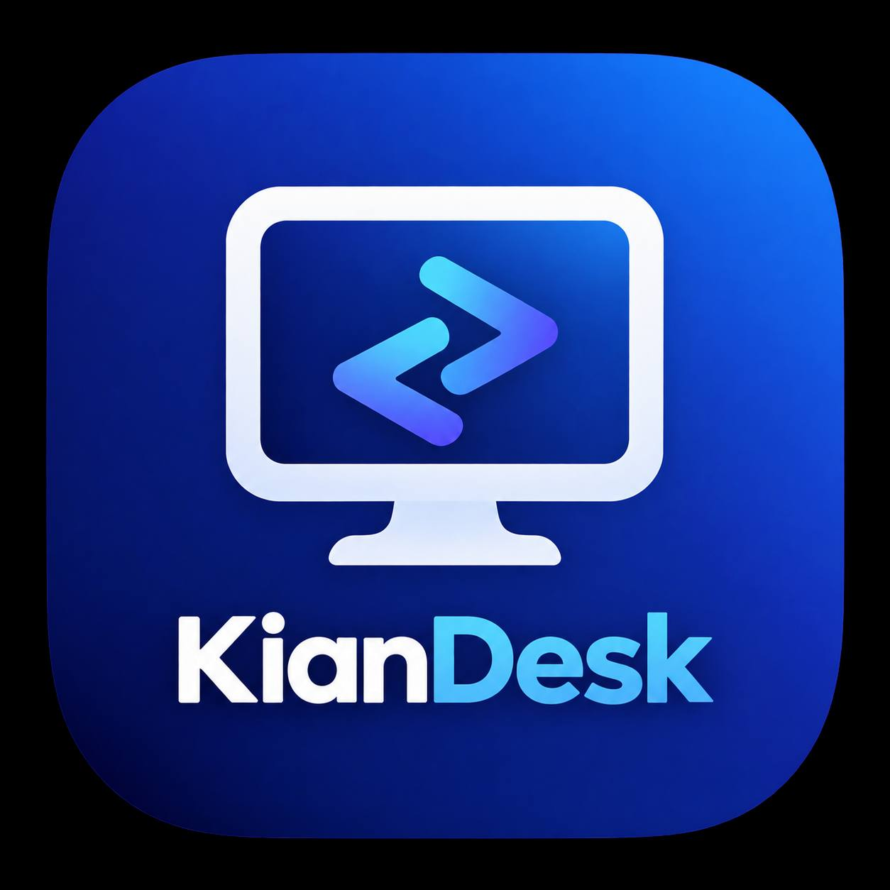

KianDeskKianDesk is a fast, secure, self-hosted remote desktop solution. Full control of your data — no third-party servers, no configuration hassle.
Connects only to your own self-hosted KianDesk server — no traffic ever touches a third party.
Built on Rust for performance, with a Flutter UI that feels native on every platform.
Works on Windows, macOS, Linux, Android, and iOS.